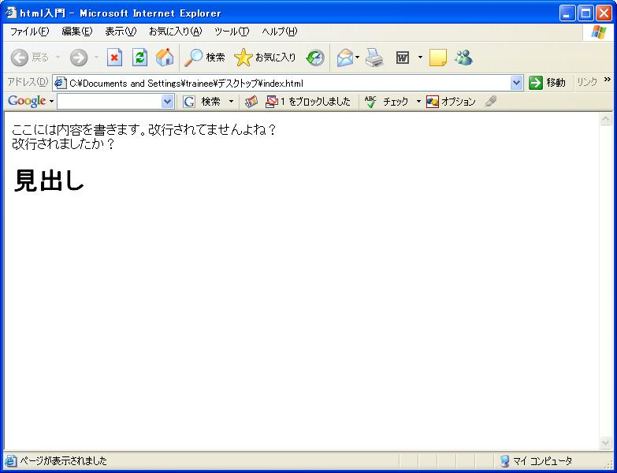

～掲示板への道・序章～
0.HTMLって・・・
HTMLとは
HTML に関するドキュメントは、現在多数出回っています。
有名なサイトとしては、
などがあります。
さて、HTML というのはなんでしょうか？というのはここでは放っておきます。
タグと呼ばれる意味を持った特殊な記号により記述されるテキストだと思っていてくれればかまいません。
以下のようなホームページがあったとします。
図1

さっそく中身を見てみましょう。
画面を右クリックして、ソースの表示を選択すると、
実際にホームページがどのように記述されているかがわかります。
（中には右クリックを禁止していたりするサイトもありますが・・・）
<html>
<head>
<title>html入門</title>
</head>
<body>
ここには内容を書きます。
改行されてませんよね？<br>改行されましたか？
<!--コメントですので画面には見えません。-->
<h1>見出し</h1>
</body>
</html>
テキストエディタにこの内容を記載し、拡張子を html（またはhtm）として保存し、
ブラウザで開くと先ほどのようなホームページになります。
さて、内容をひとつひとつ確認していきましょう。
一番最初に <html> で始まり、</html> で終わっています。
このように、タグとは、開始タグと終了タグと呼ばれる１対のタグで表現されます。
<html> タグは、
このドキュメントが HTML ドキュメントであることを宣言します。
続いて、<head> があります。ここにはこのドキュメントの内容に関する記述が入ります。
今回は <title> が定義されているだけです。
この <title> タグは、ブラウザの上部にタイトルとして表示されます。
続いて、<body> タグですが、
ここに記述した内容が実際にブラウザに表示され、ホームページの内容となります。
HTML の基本は下記の様な構成になります。
<htm>
<head>
</head>
<body>
</body>
</html>
<!--コメント-->のように挟まれた箇所はコメントとされ、実際の画面には表示されません。
<br> は改行を表します。実際に、テキストエディタなどで記述している時に、
改行を入れてもその改行は改行として認識されないので気をつけてください。
（<br> に関しては開始タグと終了タグが無いのに気づきましたか？
このように一部省略が許されているタグもあります。本来は <br/> や <br></br> と記載します。）
<h1> は見出しを表します。
<h1> から <h6> まであり、数字が大きくなる毎に文字は小さくなっていきます。
さて、駆け足で見てきましたが、タグは種類もたくさんあり、
とても覚えきれるものではありません。
必要に応じて書籍や、先ほど上げたサイトなどで確認して使用するようにしてください。
では掲示板への道にあるサンプルファイルを見てみてください。
以下のようなタグが新しく出てきます。
まずはそれぞれの意味や使い方を調べてみてください。
-
<table>
-
<form>
-
<input>
-
<hr>
-
<p>
-
<font>
-
<center>
太字のタグは特に重要です。
また、下のようなものをテーブルといい、<table> を使って表現します。
©日本インサイトテクノロジー株式会社
<font> や、<center> のように、スタイル（デザイン）を指定するタグの使用は
本来推奨されていません。
また、<table> タグを本来の用途である表を表示する目的を超えて、表組のデザインを構成するために
使用することも推奨されていません。
スタイル（デザイン）を指定するには、CSS という仕組みがあり、これを使用することが推奨されています。
研修中は、<font> や、<center> や、<table> を使用してスタイルを指定しても
構いませんが、後々は、CSS を使用して指定するようにしてください。